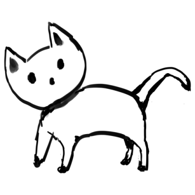

青空文庫エディター
Githubで公開中
<h1>見出し1</h1> <h2>見出し2</h2> <p>ふりがな</p> <p><ruby>漢字<rt>かんじ</rt></ruby></p> <p>縦中横</p> <p><span class="tcy">12</span>月<span class="tcy">12</span>日</p> <p>挿絵</p> <p></p> <p>ｈｒ区切り</p> <hr> <p>linkタグ</p> <p><a href="https://kyukyunyorituryo.github.io/">https://kyukyunyorituryo.github.io/</a></p> <p>リストタグ</p> <ul> <li>リスト１</li> <li>リスト２</li> </ul> <p> </p> <p><strong>太字</strong><p><span class="em-sesame">傍点</span></p><p><span class="em-line">傍線</span></p><p><em>斜体</em></p><p><u>下線</u></p><p><s>打ち消し</s></p><p>下<sub>付き</sub></p><p>上<sup>付き</sup></p>
青空文庫変換
エディターへ出力
青空文庫